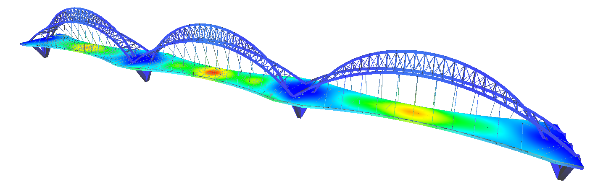

Elementos Finitos Aplicados

Muito utilizado e difundido pela sua facilidade de implementação computacional, o Método dos Elementos Finitos, MEF, tem atraído muita atenção pela sua versatilidade e grande amplitude de aplicações.
Este material didático tem como objetivo apresentar o MEF de uma forma bem simples, sem o rigor matemático e aplicado à problemas da engenharia civil. Serão abordados suas bases teóricas, procedimentos de programação aplicados e resolução de problemas com o uso de softwares. Essas três abordagens levam ao entendimento introdutório do método, sua implementação computacional e a verificação dos resultados implementados para problemas simples da engenharia civil em um software comercial, provando ao aluno que ele mesmo consegue resolver o problema desde que saiba o que é o método, quais são suas premissas teóricas e como escrever isso de forma que um computador possa entender.

Você sabe o que é isso?
$\varepsilon = \dfrac{du}{dx} = \dfrac{F}{AE} \tag{1} \label{eqDifBarra}$
Se você respondeu "uma equação diferencial", você está certo! Se você respondeu, "a equação diferencial que rege a deformação de uma barra de área da seção transversal constante A, e material com rigidez E no regime elástico linear, axialmente solicitada por uma carga concentrada F", você está mais certo ainda! Se você não respondeu nada "volte 4 anos atrás no curso de engenharia civil e vá aprender mecânica dos materiais primeiro"!
A equação diferencial $\eqref{eqDifBarra}$ nos diz que a variação do deslocamento u, na direção de x, ou seja, a deformação $\varepsilon$ é igual a magnitude da força aplicada F, dividida pela multiplicação da sua área de seção transversal pela rigidez elástica do seu material. Obviamente, essa relação é apenas válida no trecho linear proporcional da resposta mecânica do material, onde é válida a lei de hooke.
Lei de Hooke
A Lei de Hooke é usada para calcular o módulo da força elástica que é exercida pelos corpos elásticos de acordo com o tamanho da sua deformação.
Ou seja, para calcular o deslocamento dessa barra basta resolver a equação diferencial $\eqref{eqDifBarra}$, o que é, de fato, muito simples:
$ \dfrac{du}{dx} = \dfrac{F}{AE} \quad \rightarrow \quad {\displaystyle\int du} = {\displaystyle\int \dfrac{F}{AE} dx} \quad \rightarrow \quad u = \dfrac{Fx}{AE} + c \tag{2} \label{solucaoDaEqDifBar}$
Sendo c a constante de integração que pode ser avaliada em função das condições de contorno do problema, que no caso do apoio engastado são em:
$ x = 0 \rightarrow u = 0 $
E, portanto, substituindo esses valores em \eqref{solucaoDaEqDifBar}:
$ c = 0 $
Resultando no deslocamento axial, u, da barra igual a:
$ u = \dfrac{Fx}{AE} \tag{3} \label{deslTrel}$
Essa foi simples, pois a equação diferencial \eqref{eqDifBarra} é ordinária de ordem 1 e sua solução analítica trivial. Certo, mas...
O que é o Método dos Elementos Finitos??
Vejamos então, e essa equação diferencial, você resolve?
$ m \dfrac{d^2 u}{dt^2} + c \dfrac{d u}{dt} + k u = f(t) \tag{4} \label{eqDinam}$
E essa?
$ \dfrac{\dfrac{d^2v}{dx^2}}{\left[ 1 + \left( \dfrac{dv}{dx} \right)^2 \right]^{\frac{3}{2}}} = \dfrac{M(x)}{EI} \tag{5} \label{eqVigaNonLin} $
E essa, então?
$ \dfrac{\partial^4 w}{\partial x^4} + 2 \dfrac{\partial^4 w}{\partial x^2 \partial y^2} + \dfrac{\partial^4 w}{\partial y^4} = \dfrac{12 q (1 - \nu^2)}{E h^3} \tag{6} \label{eqPlacFin}$
A \eqref{eqDinam} é a equação do equilíbrio dinâmico de um simples sistema massa-mola-amortecedor, sendo m a massa, c o amortecimento, k a rigidez, u o deslocamento do sistema e $f(t)$ a força variando no tempo. A \eqref{eqVigaNonLin} é a equação de Euler-Bernoulli para vigas considerando a não linearidade geométrica, sendo v o deslocamento vertical da viga, M(x) o esforço de momento da viga função de x, E o módulo de elasticidade e I a inércia da seção transversal (segundo momento de área). A \eqref{eqPlacFin} é a equação do deslocamento vertical, w, de uma placa fina de espessura h, sem deformações axiais, submetida a um carregamento transversal vertical q e material com rigidez elástica E e coeficiente de poisson $\nu$.
A \eqref{eqDinam} até se resolve de forma simples analiticamente, a \eqref{eqVigaNonLin} já nem tanto, mas ainda assim é possível já a \eqref{eqPlacFin}, dependendo das condições, não tem solução análitica (placa em L por exemplo).
E AGORA?!?!
É justamente para esses casos onde a solução analítica é muito complexa ou não existe que se aplicam os métodos de solução numéricos ou soluções discretas. O Método dos Elementos Finitos é um deles (podem ser aplicados nas simples também como forma de facilitar a implementação computacional, por exemplo).
Então, o que é o Método dos Elementos Finitos?
O Método dos Elementos Finitos é um método numérico de solução discreta e aproximada de equações diferenciais!
Com essa definição em mente, vamos escrever um elemento de barra que consiga simular a equação diferencial \eqref{eqDifBarra} de acordo com os conceitos do Método dos Elementos Finitos.